A Vetra leva o equipamento e a speaker até o consultório da profissional, treina na prática com pacientes-modelo que ela mesma recruta e transforma esse dia em receita. Depois do treinamento, ela segue como locatária.
Portfólio atual: só o SMART HIFU (ultrassom microfocado).
Clínica, precisa, padrão indústria. A parceria de negócio aparece no conteúdo e no tom, nunca no visual.
Biomédicas, enfermeiras, farmacêuticas e odontologistas que atuam em estética. Secundário: médicos e fisioterapeutas com registro em conselho. Esteticistas não são público.
A autoridade fica na marca; a aspiração fica na cena. Peça só com equipamento parece distribuidora.
O wordmark VETRA usa Manrope ExtraBold. O "V" é desenhado: dois feixes que convergem para um ponto. O ponto é onde a energia atua, o princípio do HIFU.
| Cor | Papel |
|---|---|
| Marinho | Base. Fundo de anúncio e texto sobre claro. |
| Off-white | Fundo claro e texto sobre marinho. |
| Ciano | Botão e destaque sobre marinho. |
| Ciano escuro | Link, rótulo e destaque sobre claro. |
| Prata | Texto de apoio só sobre marinho. |
Cerca de 60% marinho ou off-white, 30% a cor oposta, 10% ciano. Se tudo for ciano, nada se destaca.
Marinho e off-white entre si: 15,7:1. Ciano sobre marinho: 6,6:1. Ciano escuro sobre off-white: 4,65:1.
Ciano não serve como texto sobre fundo claro (2,4:1). Prata não serve sobre fundo claro (1,5:1).
Aprenda na prática, no seu consultório, atendendo as suas pacientes.
| Uso | Peso | Detalhe |
|---|---|---|
| Títulos e headline | 700 / 800 | Até 2 linhas |
| Legenda de vídeo | 700 | Off-white em caixa marinho, mín. 6% da altura |
| Descritor e rótulos | 600 | Caixa alta, +25% de espaçamento, mín. 11px |
| Texto corrido | 400 / 500 | Mín. 16px no digital |
Gratuita no Google Fonts. Uma família evita erro quando várias pessoas produzem as peças. Sem itálico e sem caixa alta em frases longas.